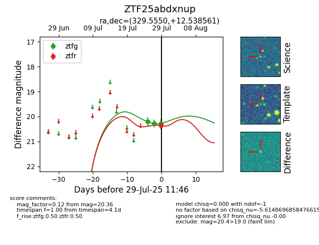

Target ZTF25abdxnup at 2025-07-29 11:46, see:
FINK: fink-portal.org/ZTF25abdxnup
Lasair: lasair-ztf.lsst.ac.uk/objects/ZTF25abdxnup
ALeRCE: alerce.online/object/ZTF25abdxnup
alt names
ZTF25abdxnup (ztf,fink)
coordinates:
equatorial (ra, dec) = (329.5550,+12.53856)
galactic (l, b) = (70.6140,-32.22344)
photometry
last ztfg=20.27, ztfr=20.36
3 ztfg, 1 ztfr detections
